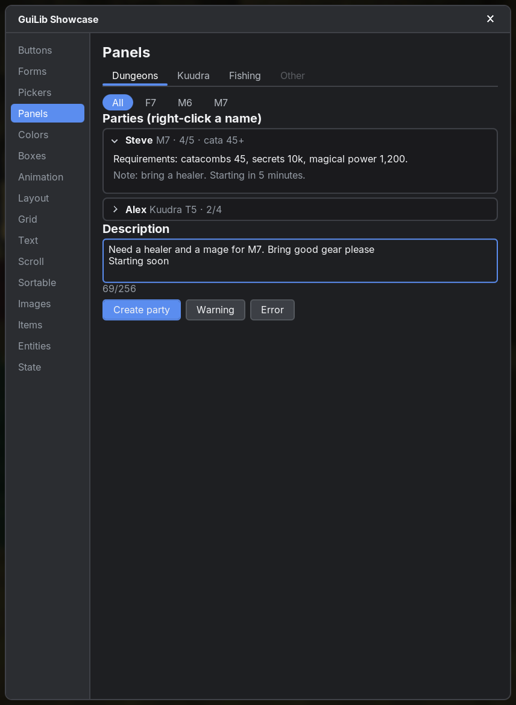
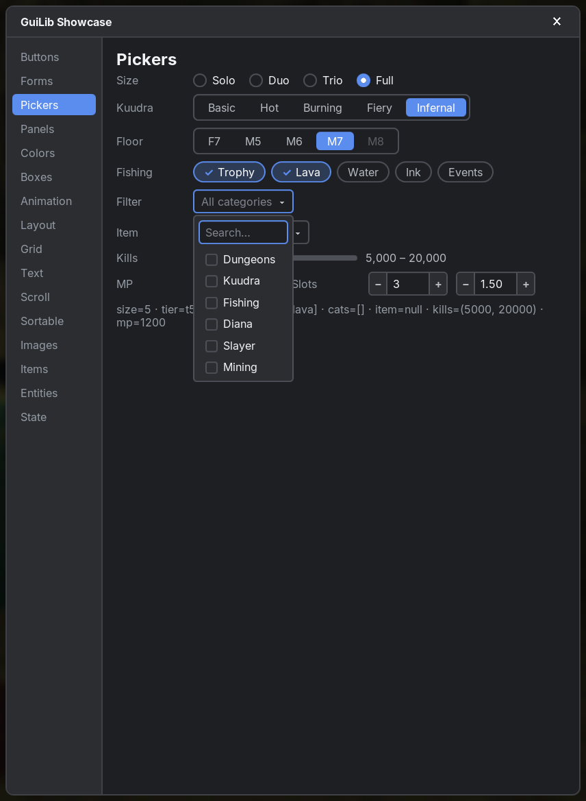
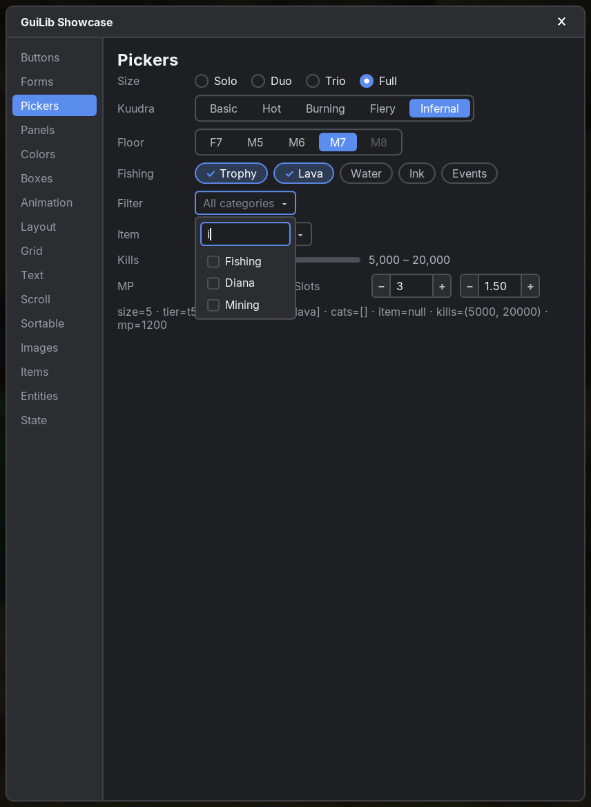

Form controls
Ready-made, styleable controls. All of them are controlled like React: pass the current value, update your state in onChange.
guilib:css/ua.css, like a browser's defaults): a button already looks like a button, a select opens a menu. Your own CSS always wins over these defaults. Add GuiLib as a dependency (see Installation) and import:import net.sbo.guilib.core.dsl.* // all tags, controls, overlays, hooks: div, button, select, modal, useToast, …
import net.sbo.guilib.core.dom.* // component, createContext, Element
import net.sbo.guilib.core.event.* // MouseEvent, KeyboardEvent, InputEvent, … (only when you name the types)
import net.sbo.guilib.fabric.* // GuiLib.open / close, text(Component), useTranslation()input(value = name, onChange = { name = it.value }). The control shows exactly what you pass; onChange fires on every edit (React semantics, not the DOM change event). Every control is built from plain elements with guilib-* classes, so you can restyle it in your own CSS. The accent color comes from --guilib-accent.
#Text
#inputtag
Single-line text field (text, password, number) or checkbox. Supports a blinking caret, mouse and Shift+arrow selection, double-click word selection and Ctrl/Cmd+A/C/X/V with the system clipboard. Typed § is shown literally. text-align: center / right aligns the text, placeholder and caret.
fun NodeBuilder.input(
type: String = "text",
value: String? = null,
placeholder: String? = null,
checked: Boolean = false,
disabled: Boolean = false,
maxLength: Int? = null,
autoFocus: Boolean = false,
onChange: ((InputEvent) -> Unit)? = null,
onInput: ((InputEvent) -> Unit)? = null,
className: String? = null,
id: String? = null,
style: String? = null,
key: Any? = null,
)| Parameter | Type | Default | Description |
|---|---|---|---|
type | String | "text" | "text", "password", "number" (filters to digits, -, ., ,) or "checkbox". |
value | String? | null | Controlled text. Without it the input keeps its own text. |
placeholder | String? | null | Shown while empty. |
checked | Boolean | false | For checkboxes. |
disabled | Boolean | false | Greyed out, not focusable. |
maxLength | Int? | null | Maximum length (never cuts an emoji in half). |
autoFocus | Boolean | false | Focus when it appears. |
onChange | ((InputEvent) -> Unit)? | null | Every edit; it.value, it.checked. |
onInput | ((InputEvent) -> Unit)? | null | Same as onChange. |
className, id, style, key | Standard props (see Elements). | ||
input(value = name, onChange = { name = it.value }, placeholder = "Your IGN", maxLength = 16)input .guilib-input-text .guilib-placeholder .guilib-caret .guilib-selection#textareafunction
Multi-line text field with word wrap. Enter inserts a line break; it scrolls vertically when the text is taller than rows lines. text-align: center / right aligns every line.
fun NodeBuilder.textarea(
value: String? = null,
onChange: ((InputEvent) -> Unit)? = null,
placeholder: String? = null,
rows: Int = 3,
maxLength: Int? = null,
maxLines: Int? = null,
disabled: Boolean = false,
autoFocus: Boolean = false,
ref: Ref<Element?>? = null,
onInput, onKeyDown, onFocus, onBlur: … = null,
className: String? = null,
id: String? = null,
style: String? = null,
key: Any? = null,
)| Parameter | Type | Default | Description |
|---|---|---|---|
value | String? | null | Controlled text (with \n line breaks). |
onChange | ((InputEvent) -> Unit)? | null | Every edit; it.value. |
placeholder | String? | null | Shown while empty. |
rows | Int | 3 | Visible lines: without a CSS height the field is exactly this many lines tall plus padding and border; more text scrolls. |
maxLength | Int? | null | Maximum length. |
maxLines | Int? | null | Maximum number of lines: Enter does nothing at the limit, extra line breaks in pasted text become spaces. Wrapped lines don't count. |
disabled | Boolean | false | |
autoFocus | Boolean | false | |
ref | Ref<Element?>? | null | |
onInput, onKeyDown, onFocus, onBlur | … | null | Like on input. |
className, id, style, key | Standard props (see Elements). | ||
var note by useState("")
textarea(value = note, onChange = { note = it.value }, placeholder = "Describe your party…", rows = 4, maxLength = 256, maxLines = 4)
span(className = "muted") { +"${note.length}/256" }textarea .guilib-textarea-line .guilib-placeholder .guilib-caret .guilib-selection
#Toggles
#checkboxfunction
A label with an input(type = "checkbox") and optional text. Clicking the text toggles too.
fun NodeBuilder.checkbox(
checked: Boolean,
onChange: ((InputEvent) -> Unit)? = null,
label: String? = null,
disabled: Boolean = false,
className: String? = null,
key: Any? = null,
)| Parameter | Type | Default | Description |
|---|---|---|---|
checked | Boolean | required | Current state. |
onChange | ((InputEvent) -> Unit)? | null | it.checked is the new state. |
label | String? | null | Text next to the box. |
disabled | Boolean | false | |
className, key | Standard props (see Elements). | ||
checkbox(checked = agree, onChange = { agree = it.checked }, label = "Show me in the party finder")input[type=checkbox] .guilib-check .guilib-checkbox#switchfunction
An animated on/off switch (sliding pill). Same onChange as checkbox.
fun NodeBuilder.switch(
checked: Boolean,
onChange: ((InputEvent) -> Unit)? = null,
label: String? = null,
disabled: Boolean = false,
className: String? = null,
id: String? = null,
key: Any? = null,
)| Parameter | Type | Default | Description |
|---|---|---|---|
checked | Boolean | required | Current state. |
onChange | ((InputEvent) -> Unit)? | null | it.checked is the new state. |
label | String? | null | Text after the switch. |
disabled | Boolean | false | |
className, id, key | Standard props (see Elements). | ||
var sounds by useState(true)
switch(checked = sounds, onChange = { sounds = it.checked }, label = "Sounds").guilib-switch .checked .guilib-switch-track .guilib-switch-thumb .guilib-switch-label#Sliders & numbers
#sliderfunction
A range slider like <input type="range">. There are Float and Int overloads; the type of value picks one.
onChange fires for every new value while dragging; onChangeEnd once with the final value on release or after a key press. Save settings in onChangeEnd.
fun NodeBuilder.slider(
value: Float / Int,
onChange: ((Float) -> Unit)? = null,
min: Float = 0f,
max: Float = 100f,
step: Float = 1f,
onChangeEnd: ((Float) -> Unit)? = null,
showValue: Boolean = false,
format: ((Float) -> String)? = null,
disabled: Boolean = false,
className: String? = null,
id: String? = null,
style: String? = null,
key: Any? = null,
)| Parameter | Type | Default | Description |
|---|---|---|---|
value | Float / Int | required | Current value. |
onChange | ((Float) -> Unit)? | null | Every new value while dragging. |
min | Float | 0f | Lower bound. |
max | Float | 100f | Upper bound. |
step | Float | 1f | Values snap to multiples of step from min; 0f = continuous. |
onChangeEnd | ((Float) -> Unit)? | null | Final value on release / after a key press. |
showValue | Boolean | false | Show the value after the slider. |
format | ((Float) -> String)? | null | Formats the shown value (default: as many decimals as step). |
disabled | Boolean | false | |
className, id, style, key | Standard props (see Elements). | ||
style or on .guilib-slider.var volume by useState(70f)
slider(value = volume, onChange = { volume = it }, step = 5f, showValue = true, format = { "${it.toInt()}%" },
onChangeEnd = { config.volume = it; config.save() })
var range by useState(12)
slider(value = range, onChange = { range = it }, min = 1, max = 32, showValue = true, format = { "$it chunks" }).guilib-slider .dragging .guilib-slider-track .guilib-slider-rail .guilib-slider-fill .guilib-slider-thumb .guilib-slider-field .guilib-slider-value#rangeSliderfunction
A slider with two thumbs selecting a range, e.g. a filter "kills between 5,000 and 20,000". A press moves the nearer thumb; the thumbs can't pass each other. Float and Int overloads.
fun NodeBuilder.rangeSlider(
low: Float / Int,
high: Float / Int,
onChange: ((low, high) -> Unit)? = null,
min: Float = 0f,
max: Float = 100f,
step: Float = 1f,
onChangeEnd: ((low, high) -> Unit)? = null,
showValue: Boolean = false,
format: ((Float) -> String)? = null,
disabled: Boolean = false,
className: String? = null,
id: String? = null,
style: String? = null,
key: Any? = null,
)| Parameter | Type | Default | Description |
|---|---|---|---|
low | Float / Int | required | Lower end of the range. |
high | Float / Int | required | Upper end. |
onChange | ((low, high) -> Unit)? | null | Every change while dragging. |
min | Float | 0f | |
max | Float | 100f | |
step | Float | 1f | |
onChangeEnd | ((low, high) -> Unit)? | null | Final range on release / after a key press. |
showValue | Boolean | false | Show "low – high". |
format | ((Float) -> String)? | null | Formats each end. |
disabled | Boolean | false | |
className, id, style, key | Standard props (see Elements). | ||
slidervar kills by useState(5000 to 20000)
rangeSlider(low = kills.first, high = kills.second, onChange = { lo, hi -> kills = lo to hi },
min = 0, max = 50000, step = 500, showValue = true, format = { "%,d".format(it) }).guilib-range-slider .guilib-slider-thumb.low .guilib-slider-thumb.high + all .guilib-slider-* classes#numberInputfunction
A number field with − and + buttons that keeps the value within min..max. Values inside the range are reported while typing; anything else is clamped when the field loses focus or on Enter. Typing accepts the shorthand 100k, 1.5m, 2,5k or 1b (k = thousand, m = million, b = billion, any case, . or , as decimal mark): the text stays as typed while editing and becomes the number (100000) on blur or Enter; invalid text goes back to the last value. Int and Double overloads (the Double one shows as many decimals as step). With allowEmpty = true the value is an Int? / Double?: null shows an empty field with the placeholder, clearing the field reports null, + on an empty field starts at step (at least min), − on an empty field does nothing, and − at min empties the field again.
fun NodeBuilder.numberInput(
value: Int / Double,
onChange: ((Int) -> Unit)? = null,
allowEmpty: Boolean = –,
min: Int = Int.MIN_VALUE,
max: Int = Int.MAX_VALUE,
step: Int = 1,
wheel: Boolean = true,
disabled: Boolean = false,
placeholder: String? = null,
stepMultiplier: (Modifiers) -> Int = Shift ×10, Ctrl ×100, Ctrl+Shift ×1000,
parse: (String) -> Double? = parseNumberShorthand,
className: String? = null,
id: String? = null,
style: String? = null,
key: Any? = null,
)| Parameter | Type | Default | Description |
|---|---|---|---|
value | Int / Double | required | Current value. |
onChange | ((Int) -> Unit)? | null | New, clamped value (Int? with allowEmpty). |
allowEmpty | Boolean | – | Only on the Int? / Double? overloads (required there): the field may be empty. |
min | Int | Int.MIN_VALUE | |
max | Int | Int.MAX_VALUE | |
step | Int | 1 | Step of the buttons, arrows and wheel. |
wheel | Boolean | true | Mouse wheel over the field steps the value. |
disabled | Boolean | false | |
placeholder | String? | null | |
stepMultiplier | (Modifiers) -> Int | Shift ×10, Ctrl ×100, Ctrl+Shift ×1000 | Steps per click, arrow key and wheel notch for the held keys (Cmd counts as Ctrl). Replace it for other factors, e.g. { m -> if (m.shift) 64 else 1 } for stacks. |
parse | (String) -> Double? | parseNumberShorthand | Turns the typed text into a number (null = invalid). The default reads plain numbers plus k/m/b. Own formats: { t -> if (t.endsWith("h")) t.dropLast(1).toDoubleOrNull()?.times(3600) else parseNumberShorthand(t) }. With a custom parser the field accepts any characters. |
className, id, style, key | Standard props (see Elements). | ||
var slots by useState(3)
numberInput(value = slots, onChange = { slots = it }, min = 1, max = 5)
var price by useState(1.5)
numberInput(value = price, onChange = { price = it }, min = 0.0, max = 10.0, step = 0.25)
var budget by useState(2_500_000.0) // type 100k, 1.5m, 2,5k or 1b
numberInput(value = budget, onChange = { budget = it }, min = 0.0, step = 100_000.0)
var minCata by useState<Int?>(null) // empty = no requirement
numberInput(value = minCata, onChange = { minCata = it }, allowEmpty = true, min = 0, max = 50, placeholder = "any").guilib-number .guilib-number-input .guilib-number-dec .guilib-number-inc#Choices
#selectfunction
A dropdown. The menu opens in a portal, so it's never clipped by scroll containers. With searchable = true the menu starts with a search field that filters the options while typing (case-insensitive, by label or value; § codes are ignored).
fun NodeBuilder.select(
value: String?,
onChange: ((InputEvent) -> Unit)? = null,
disabled: Boolean = false,
placeholder: String? = null,
searchable: Boolean = false,
searchPlaceholder: String? = null,
options: SelectBuilder.() -> Unit,
className: String? = null,
id: String? = null,
style: String? = null,
key: Any? = null,
)| Parameter | Type | Default | Description |
|---|---|---|---|
value | String? | required | Selected option value. |
onChange | ((InputEvent) -> Unit)? | null | it.value is the chosen value. |
disabled | Boolean | false | |
placeholder | String? | null | Shown when nothing is selected. |
searchable | Boolean | false | Add a search field to the menu. |
searchPlaceholder | String? | null | Placeholder of the search field (default "Search…"). |
options | SelectBuilder.() -> Unit | required | option(value, label, disabled = false, title = null) or option(value) { +"Label" }. title is a tooltip for that entry, shown above the open menu. className / style go on the menu entry and on its label in the box while chosen (.guilib-select-chosen, one span per chosen entry of a multiSelect), e.g. to color item names by rarity; labels also take § codes. The same option works in multiSelect, radioGroup, segmented and chips. |
className, id, style, key | Standard props (see Elements). | ||
select(value = mode, onChange = { mode = it.value }) {
option("normal", "Normal")
option("hard", "Hard")
option("expert", "Expert (locked)", disabled = true)
}
select(value = item, onChange = { item = it.value }, placeholder = "Search an item…", searchable = true) {
for (i in items) option(i.id, i.displayName) // labels may contain § codes
}select .guilib-select-value .guilib-select-chosen .guilib-select-arrow .guilib-select-menu .guilib-select-search .guilib-select-empty .guilib-option .selected .highlighted .disabled
#multiSelectfunction
A dropdown for choosing several options. Each option has a check mark, the menu stays open while toggling and the box shows the chosen labels (each keeps its option's className / style, see select).
fun NodeBuilder.multiSelect(
values: List<String>,
onChange: ((List<String>) -> Unit)? = null,
disabled: Boolean = false,
placeholder: String? = null,
searchable: Boolean = false,
searchPlaceholder: String? = null,
options: SelectBuilder.() -> Unit,
className: String? = null,
id: String? = null,
style: String? = null,
key: Any? = null,
)| Parameter | Type | Default | Description |
|---|---|---|---|
values | List<String> | required | Selected values. |
onChange | ((List<String>) -> Unit)? | null | New selection, in option order. |
disabled | Boolean | false | |
placeholder | String? | null | Shown when nothing is selected. |
searchable | Boolean | false | Add a search field. |
searchPlaceholder | String? | null | |
options | SelectBuilder.() -> Unit | required | Like select. |
className, id, style, key | Standard props (see Elements). | ||
var cats by useState(listOf<String>())
multiSelect(values = cats, onChange = { cats = it }, placeholder = "All categories", searchable = true) {
option("dungeons", "Dungeons"); option("kuudra", "Kuudra"); option("fishing", "Fishing")
}select.multiple .guilib-option-check + select classes
#radioGroupfunction
Radio buttons (one of several). Like native radios, the selected radio is the Tab stop and the arrow keys move the selection.
fun NodeBuilder.radioGroup(
value: String?,
onChange: ((String) -> Unit)? = null,
vertical: Boolean = false,
disabled: Boolean = false,
options: SelectBuilder.() -> Unit,
className: String? = null,
id: String? = null,
key: Any? = null,
)| Parameter | Type | Default | Description |
|---|---|---|---|
value | String? | required | Selected value. |
onChange | ((String) -> Unit)? | null | The chosen value. |
vertical | Boolean | false | Stack the options. |
disabled | Boolean | false | |
options | SelectBuilder.() -> Unit | required | option(value, label, disabled). |
className, id, key | Standard props (see Elements). | ||
radioGroup(value = size, onChange = { size = it }) {
option("1", "Solo"); option("2", "Duo"); option("3", "Trio"); option("5", "Full")
}.guilib-radio-group .vertical .guilib-radio .checked .guilib-radio-dot .guilib-radio-label#segmentedfunction
Segmented buttons: one of several, joined into a bar with a highlight that slides to the selected segment. Same API as radioGroup.
fun NodeBuilder.segmented(
value: String?,
onChange: ((String) -> Unit)? = null,
vertical: Boolean = false,
disabled: Boolean = false,
options: SelectBuilder.() -> Unit,
className: String? = null,
id: String? = null,
key: Any? = null,
)| Parameter | Type | Default | Description |
|---|---|---|---|
value | String? | required | Selected value. |
onChange | ((String) -> Unit)? | null | The chosen value. |
vertical | Boolean | false | |
disabled | Boolean | false | |
options | SelectBuilder.() -> Unit | required | |
className, id, key | Standard props (see Elements). | ||
segmented(value = tier, onChange = { tier = it }) {
option("t1", "Basic"); option("t2", "Hot"); option("t3", "Burning"); option("t4", "Fiery"); option("t5", "Infernal")
}.guilib-segmented .guilib-segment .selected .guilib-segment-indicator#chipsfunction
Toggleable chips for picking several options, e.g. filters. A nicer alternative to multiSelect for a handful of options.
fun NodeBuilder.chips(
values: List<String>,
onChange: ((List<String>) -> Unit)? = null,
disabled: Boolean = false,
options: SelectBuilder.() -> Unit,
className: String? = null,
key: Any? = null,
)| Parameter | Type | Default | Description |
|---|---|---|---|
values | List<String> | required | Selected values. |
onChange | ((List<String>) -> Unit)? | null | New selection, in option order. |
disabled | Boolean | false | |
options | SelectBuilder.() -> Unit | required | |
className, key | Standard props (see Elements). | ||
chips(values = fishing, onChange = { fishing = it }) {
option("trophy", "Trophy"); option("lava", "Lava"); option("water", "Water")
}.guilib-chips .guilib-chip .selected .guilib-chip-check
#Colors
#colorPickerfunction
An inline color picker: saturation/value area, hue slider, optional alpha slider, hex input and preview. Colors are ARGB Ints.
fun NodeBuilder.colorPicker(
value: Int,
onChange: ((Int) -> Unit)? = null,
alpha: Boolean = false,
className: String? = null,
key: Any? = null,
)| Parameter | Type | Default | Description |
|---|---|---|---|
value | Int | required | ARGB color, e.g. 0xFF5B8DEF.toInt(). |
onChange | ((Int) -> Unit)? | null | New color. |
alpha | Boolean | false | Show the alpha slider and an 8-digit hex value. |
className, key | Standard props (see Elements). | ||
colorPicker(value = accent, onChange = { accent = it }).guilib-color-picker .guilib-cp-sv .guilib-cp-hue .guilib-cp-alpha .guilib-cp-handle .guilib-cp-thumb .guilib-cp-preview .guilib-cp-hex
#colorInputfunction
A swatch button showing the color and its hex code that opens a colorPicker in a popover.
fun NodeBuilder.colorInput(
value: Int,
onChange: ((Int) -> Unit)? = null,
alpha: Boolean = false,
disabled: Boolean = false,
className: String? = null,
key: Any? = null,
)| Parameter | Type | Default | Description |
|---|---|---|---|
value | Int | required | ARGB color. |
onChange | ((Int) -> Unit)? | null | |
alpha | Boolean | false | |
disabled | Boolean | false | |
className, key | Standard props (see Elements). | ||
colorInput(value = glow, onChange = { glow = it }, alpha = true).guilib-color-input .guilib-color-swatch .guilib-color-hex .guilib-color-popover#SelectBuilder
select, multiSelect, radioGroup, segmented and chips share the same option builder:
option("value", "Label") // plain label (§ codes allowed)
option("value", "Label", disabled = true)
option("value") { +"Label" } // label from text children